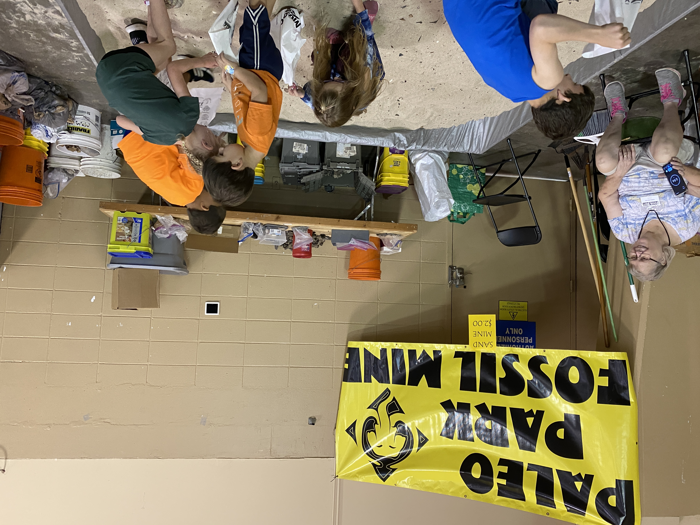

FossilFest Fun!
These are some of the activities and things to expect during FossilFest!
Kids Mine
FossilFest offers a kids mine that is a sand box stocked with donated fossils for kids to search through. The kids get 3 minutes to look for fossils in the pit. It costs $3.00 per kid. They can take their finds to the ID table afterwards to have a club member help them identify their treasure.

Face Painting
Kids (or adults) can get their face painted.
Paleo Workshops
FossilFest offers various workshops and presentations.
Fossil, Gem, and Other Vendors
FossilFest has a number of vendors selling fossils from Florida and afar, gems, antique bottles, bones, and jewlery. There are always interesting things to find at Fossil Fest!


Silent Auction and Raffles
FossilFest offers a silent auction throughout both days of the event. There are also raffle prizes you can try to win!
Touch Table
FossilFest offers an educational "Touch Table" where anyone can actually pick up various fossils, learn about them, how to identify them, and you won't get in trouble for touching them, just don't drop them!

Be sure to renew your Fossil
Permits!
you can also apply or renew during FossilFest!
Past FossilFest Videos
2023
2022